Every page, and what it does
A walk through each screen of Dynamic Luggage Tag — who sees it, what is on it, how it behaves, and what it deliberately keeps private. Screenshots are real captures of the running app.
Public site
What anyone sees before signing in.
Landing
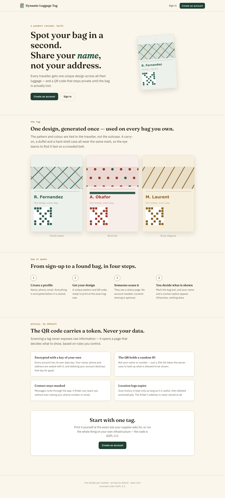
What is on it
- Hero — the product in one line: Share your name, not your address, beside a tilted sample tag drawn by the same renderer the dashboard uses.
- The tag — three sample designs (forest weave, brick dot, brass diagonal) showing that the pattern belongs to the traveller, not the suitcase.
- How it works — four numbered steps from sign-up to a found bag.
- Privacy, by default — four cards: per-account encryption keys, a QR that holds only a random token, masked contact, expiring location logs.
- Call to action — create an account, and a note that the code is AGPL-3.0 for self-hosting.
How it behaves
Static. The header swaps Sign in / Create an account for Tags / Inbox / Settings / Sign out once a session exists. The sample tags are fixed demo designs, not generated from anyone's data.
Not found
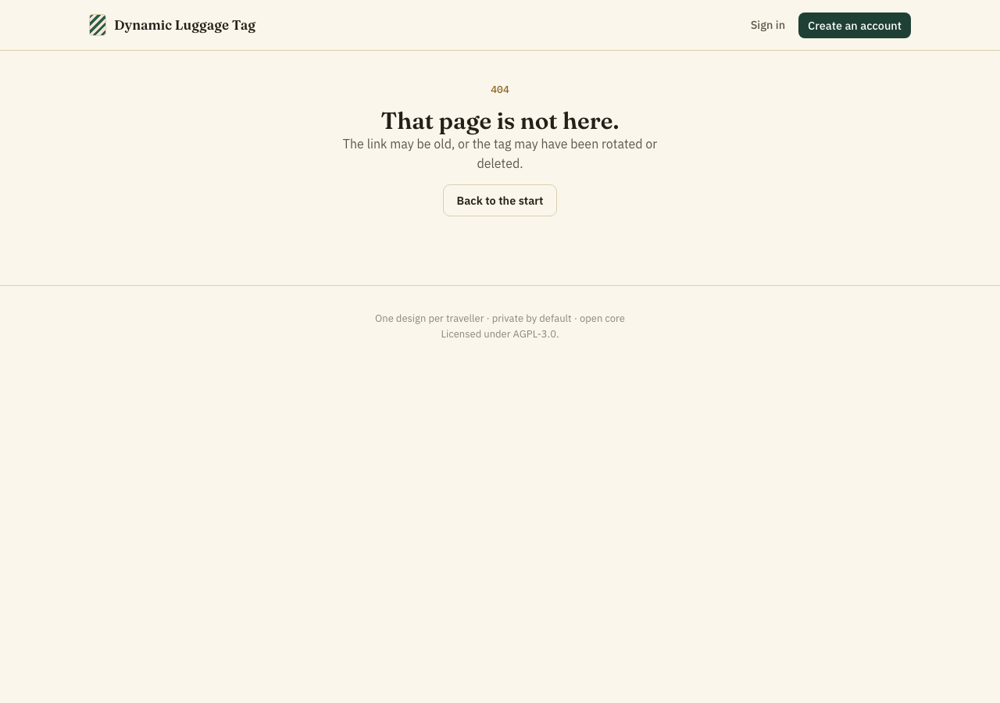
What is on it
A short “That page is not here” with a hint that the link may be old or the tag rotated or deleted, and a way back to the start.
How it behaves
Client-side catch-all inside the site layout. The scan and relay routes have their own not-found states (see Unregistered tag) so a finder never lands on marketing chrome.
Account access
Sign-up, confirmation, sign-in and recovery. Every one of these is built so that the response never reveals whether an email address has an account — this product exists to keep a traveller's identity private, so an endpoint that confirms “yes, this person uses it” would undermine the whole thing.
Create an account
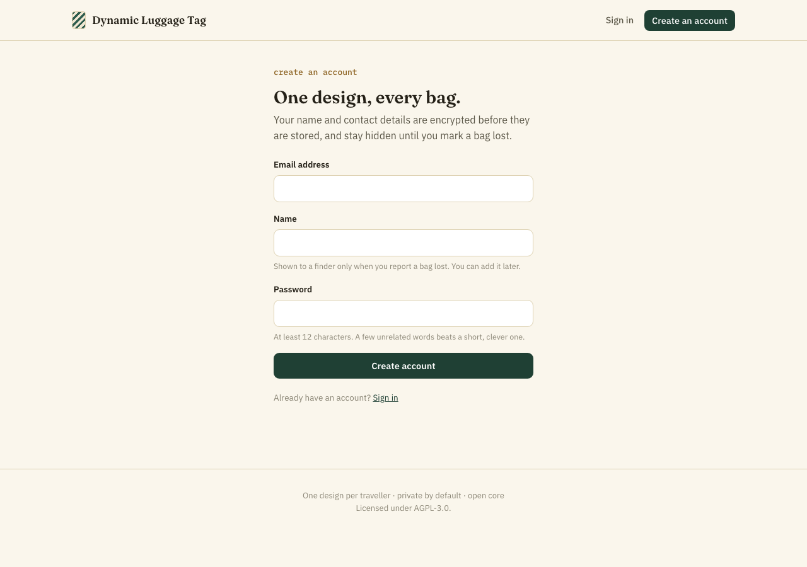
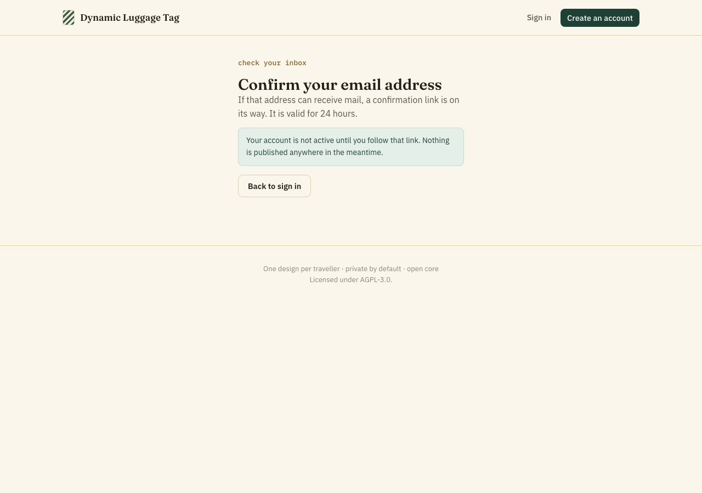
What is on it
- Email address — required.
- Name — optional; the hint explains it is shown to a finder only when a bag is reported lost.
- Password — at least 12 characters. No character-class rules; instead it rejects common passwords (including padded ones like
password1234), long runs likeabcdefgh, too few distinct characters, and anything containing the email address or name.
How it behaves
- Field errors appear under the matching input.
- On success the form is replaced by Confirm your email address. The account exists but cannot sign in until the link is followed.
- Limited to 5 attempts an hour and 20 a day per client.
Privacy
The confirmation screen is identical whether the address is new, already registered, or registered but never confirmed. What differs is only the email: a new address gets a confirmation link; an unconfirmed account gets a fresh link; a confirmed account gets “someone tried to sign up with your address”. Only the address holder learns which case applied. A second registration never changes the password on an existing account — otherwise anyone could register someone else's address and take the account over when the real owner clicked the link.
Confirm your address
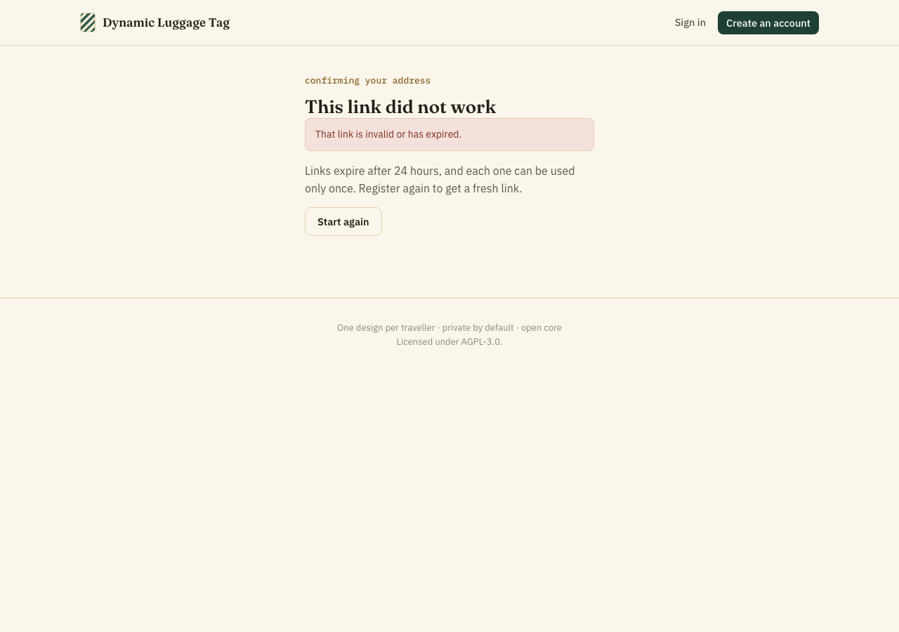
What is on it
A brief “Confirming…” spinner, then either a redirect to Tags or the failure state shown: This link did not work, why links expire, and a way to start again.
How it behaves
- Links last 24 hours and work once. Requesting a new one invalidates the old.
- Following a valid link marks the address confirmed and signs you in, so there is no second password prompt.
- The request is sent exactly once even under React's development double-render, because a second attempt with a single-use token would show a false failure.
Security
Only an HMAC of the token is stored, so a copy of the database contains no working confirmation links.
Sign in
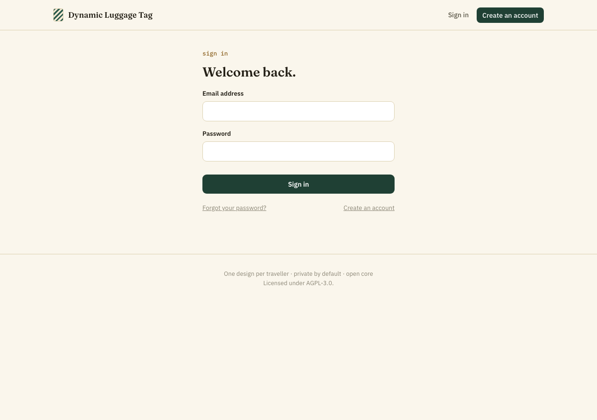
What is on it
Email, password, Sign in, and links to Forgot your password? and Create an account.
How it behaves
- Two-factor — if the account has an authenticator set up, a correct password reveals a code field in place, with a switch to use a one-time recovery code instead. Email and password stay filled in; only the code is cleared after a mistake.
- Lockout — 8 wrong attempts lock the account for 15 minutes.
- Rate limit — 10 attempts per 15 minutes and 50 a day per client.
- After signing in you return to the page you were trying to reach, or Tags.
Privacy and security
- An unknown address, a wrong password and a locked account all return the same “That email or password is not correct.” The unknown-address path also runs a full Argon2 check against a throwaway hash, so the time taken doesn't give the answer away either.
- The session lives in a
HttpOnly,SameSite=Strictcookie that page scripts cannot read, backed by a server-side record that can be revoked.
Sign in with an unconfirmed account
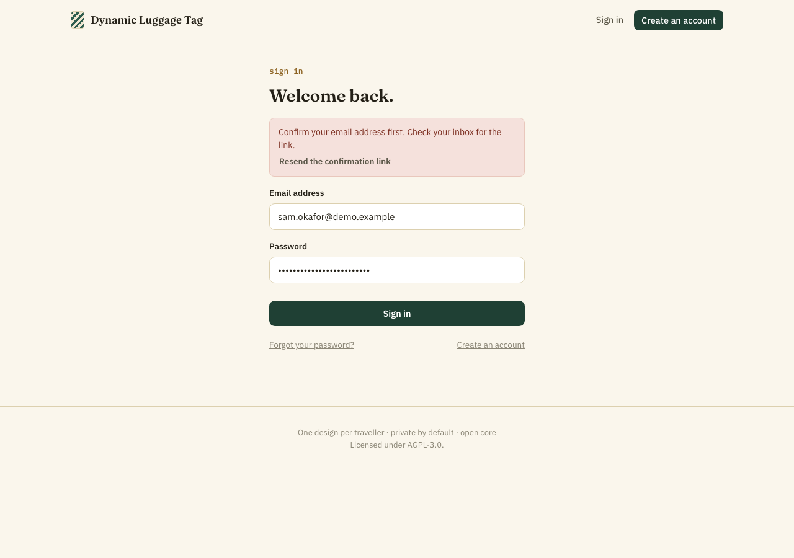
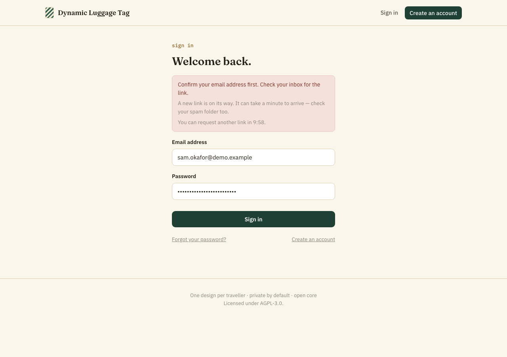
What is on it
With the correct password for an account that was never confirmed: Confirm your email address first. Check your inbox for the link. Directly underneath is Resend the confirmation link. After clicking, the note says a new link is on its way (and to check spam), and the button becomes You can request another link in 9:58, counting down.
How it behaves
- One link every 10 minutes, per account. The limit is enforced by the server, so reloading, opening a new tab, switching browser or changing network does not reset it. The sign-up email counts toward the same window.
- The countdown survives a page reload (the deadline is kept in browser storage as a bare timestamp — no address).
- This page exists because without it an unconfirmed account would be a dead end: sign-in refuses it, and there would be no other way to get another link.
Privacy
The resend request answers identically — always “a new link is on its way if that address is waiting to be confirmed”, always a 600-second wait — whether an email was sent, was throttled, the account is already confirmed, or no account exists. That is why the countdown starts regardless: the browser genuinely isn't told which case it was.
Forgot password
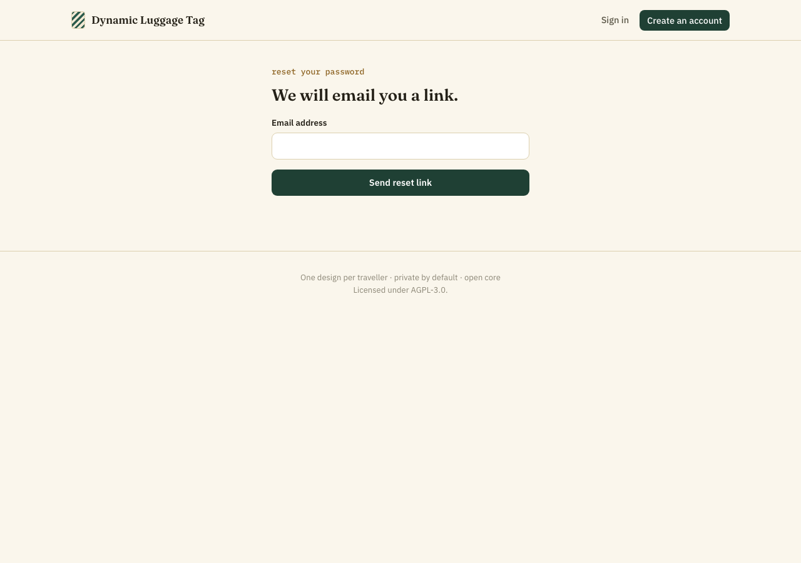
What is on it
One email field and Send reset link. Afterwards: “If that address has an account… a reset link is on its way. It is valid for 30 minutes and can be used once.”
How it behaves
- 5 requests an hour, 15 a day per client.
- Even a network error shows the same “on its way” screen — surfacing a difference would reintroduce exactly the signal the design removes.
Set a new password
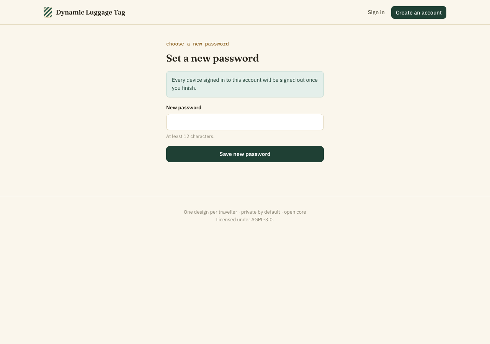
What is on it
A single New password field, and a notice that every signed-in device will be signed out. Without a token in the link, this route shows the Forgot password form instead.
How it behaves
- The same password rules as registration.
- On success: the lock and failed-attempt count are cleared, every session is revoked (a reset is recovery from losing control of the account), and you are sent to Sign in.
Owner app
Everything behind sign-in. All personal fields shown here — name, phone, address, tag labels, locations, messages — are stored encrypted with a key that belongs to this one account, and decrypted only for the request that displays them.
Tags
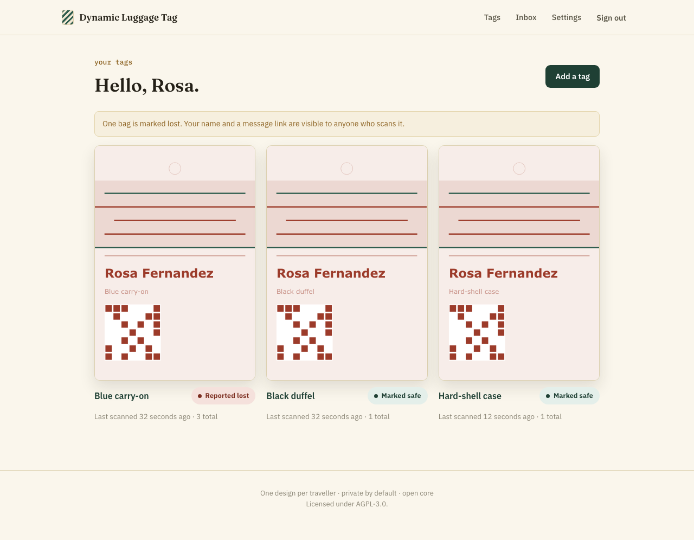
What is on it
- Greeting and Add a tag.
- Warnings, when they apply — “One bag is marked lost. Your name and a message link are visible to anyone who scans it,” and, for an unconfirmed address, that confirming is required before a bag can be marked lost.
- A card per tag — the tag face with your name and label, a Reported lost or Marked safe pill, and “Last scanned … · N total” (or “Never scanned · added <date>”).
How it behaves
- What you see is what prints. Each card uses the same pattern and layout geometry as the print PDF, not an approximation of it.
- Every tag carries the same design. It is generated from a random seed on your account — never from your name or email — so a carry-on, a duffel and a hard-shell case all wear one recognisable mark.
- Add a tag creates one immediately with a fresh 256-bit scan code. Up to 25 tags per account.
- Clicking a card opens Tag detail. The list view deliberately omits scan links; only the detail page shows one.
- The QR drawn on these previews is a decorative placeholder, not a scannable code, so nobody tries to scan a screen full of them.
Tag detail
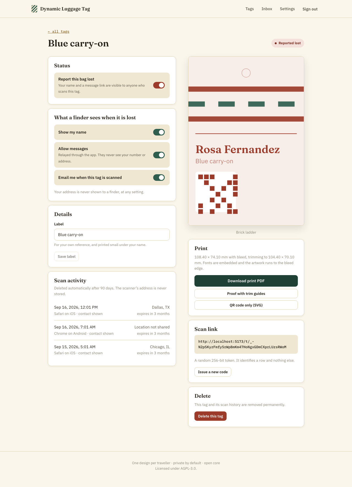
Left column
- Status — Report this bag lost. The hint changes with state: while safe, “a scan shows nothing personal at all”; while lost, “your name and a message link are visible to anyone who scans this tag.” Disabled until your email address is confirmed, because this is the one action that publishes a name to strangers.
- What a finder sees when it is lost — Show my name, Allow messages and Email me when this tag is scanned. The card ends with a reminder that the address is never shown, at any setting.
- Details — the label (“Blue carry-on”), stored encrypted and printed small under your name.
- Scan activity — the 100 most recent scans: time, device family (“Safari on iOS”), whether contact was shown, the city if the finder shared one, and when each entry is automatically deleted.
Right column
- Tag preview and the design's name (“Brick ladder”).
- Print — Download print PDF at the supplier's exact size, Proof with trim guides, and QR code only (SVG). See Printed tag.
- Scan link — the URL encoded in the QR, and Issue a new code, which asks for confirmation, invalidates every printed copy, and closes open conversations with finders.
- Delete — removes the tag and its entire scan history, permanently.
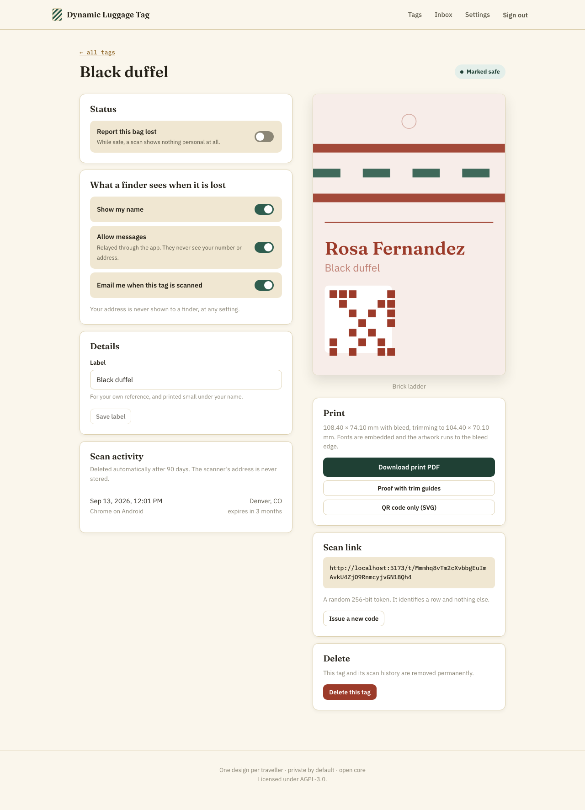
Privacy in the scan log
- The finder's network address is never stored. Deduplication uses a keyed hash of a truncated address that is salted with the date, so it stops matching after a day.
- Location is only ever what a finder chose to share, and only to city level. It is encrypted like any other personal field.
- Device is a family name, never a full user-agent string.
- Entries expire after 90 days by default and are hard-deleted.
Deleting is final. A deleted tag's history is not soft-deleted or recoverable — a “deleted” flag on a location history is still a location history.
Inbox
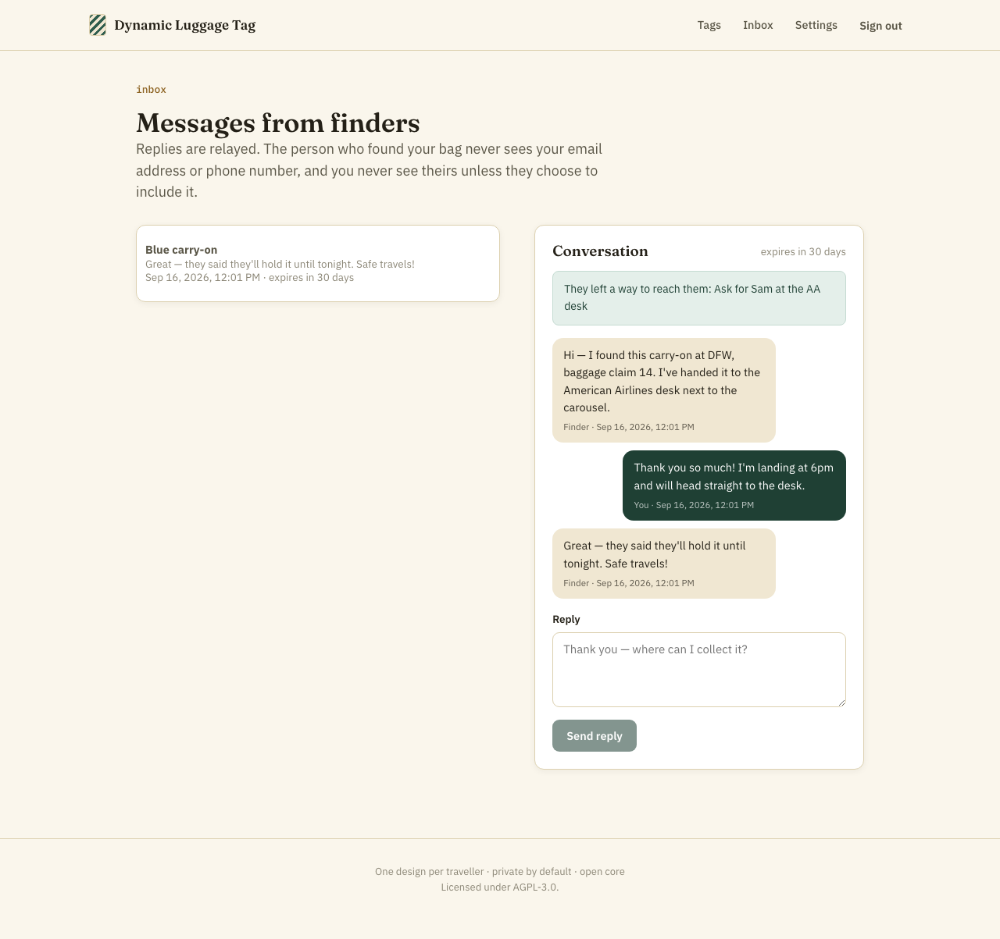
What is on it
- Conversation list — per thread: the tag it concerns, a new pill if unread, a preview of the latest message, the time, and when it expires.
- Open conversation — finder messages on the left, yours on the right in green, each with sender and time.
- Contact the finder left, if they chose to — here, “Ask for Sam at the AA desk”.
- Reply box, or a notice if the conversation was closed by rotating the tag's code.
How it behaves
- Opening a thread marks it read.
- Each message in either direction extends the conversation by 30 days, so an active exchange is not cut off mid-way. Idle ones are deleted.
- Up to 50 messages per conversation.
Privacy
Messages are relayed. The finder never sees your email or phone number, and you only see theirs if they typed it. Message bodies are encrypted at rest, and the notification email says only that a message arrived — never what it says.
Settings
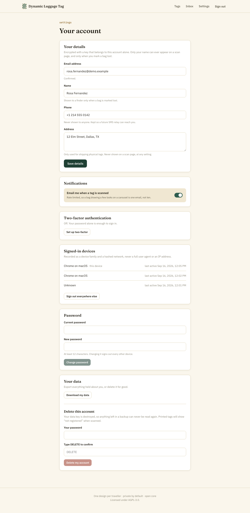
Your details
Email (read-only, with confirmation status), name, phone and address — each with a hint saying exactly where it can appear. Name: only to a finder, only when a bag is lost. Phone: never shown. Address: only for shipping physical tags, never on a scan page. Loading this card is recorded in the audit log, because it is where encrypted data becomes readable again.
Notifications
One switch for scan emails. They are already rate limited: repeat scans by the same person within 10 minutes count once, and each tag emails at most every 30 minutes.
Two-factor authentication
Set up two-factor shows a secret and setup link for an authenticator app; entering a working code turns it on and reveals ten recovery codes once. Turning it off needs your password and sends a security email.
Signed-in devices
Every active session by device family and last activity, with this device marked, and Sign out everywhere else. (“Unknown” in the capture is the command-line client that seeded the demo data.)
Password
Current and new password. Changing it signs out every other device and sends an email with a “this was not me” link.
Your data
- Download my data — one JSON file with your profile, design, every tag, its scans and full conversations, decrypted. Limited to 5 a day.
- Delete my account — needs your password and typing
DELETE. The account's encryption key is destroyed before the rows are, so anything left in a backup can never be decrypted. Printed tags then show “not registered”.
Finder — the scan surface
The only part of the system a stranger can reach. It has no navigation, no sign-up prompt and no cookie banner: someone standing at a carousel should get their one answer in the first line. Shown at phone width.
Scan: marked safe
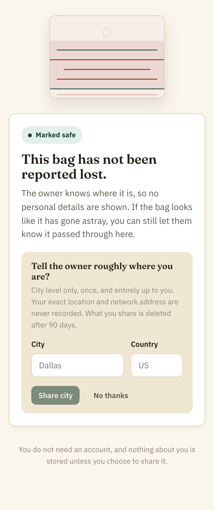
What is on it
- The tag's crest — just the pattern, cropped to the top of the tag, so the finder can confirm it's the tag in their hand.
- Marked safe — “This bag has not been reported lost. The owner knows where it is, so no personal details are shown.”
- Tell the owner roughly where you are? — optional city and country, Share city or No thanks.
- A closing line that no account is needed and nothing is stored unless the finder chooses to share.
How it behaves
- Loading the page changes nothing. The scan is recorded by a separate request the page sends once it has rendered, so link-preview bots and browser prefetching never show up in the owner's history or trigger an email.
- The owner gets a scan email, subject to the cooldowns described in Settings.
- Sharing is one-time and city-level only; typed input is validated to plain place names.
Privacy
The response for a safe tag contains the design, the status and the retention period. There is no field for a name, number or address to leak through.
Scan: reported lost
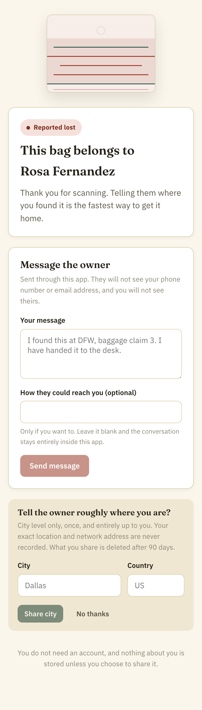
What is on it
- Reported lost — “This bag belongs to Rosa Fernandez. Thank you for scanning.”
- Message the owner — a message box and an optional “How they could reach you”, with the explanation that neither side sees the other's number or email.
- Tell the owner roughly where you are?, as on the safe page.
How it behaves
- The name appears only if the owner left Show my name on; otherwise the heading reads “The owner is looking for this bag”.
- The message form appears only if Allow messages is on. A safe tag refuses messages outright — the relay exists to get a bag home, not as a channel to a stranger.
- Messages are limited to 5 an hour and 15 a day per client.
Privacy
The name is the only personal field that has any code path into this response. Phone, email and address cannot appear here at any setting.
Message sent
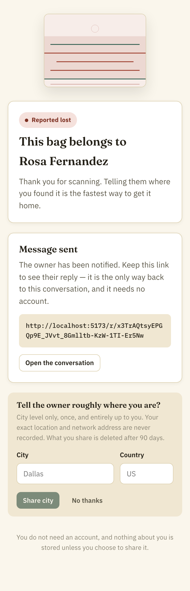
What is on it
Message sent — “The owner has been notified. Keep this link to see their reply — it is the only way back to this conversation, and it needs no account.” The private conversation link, and Open the conversation.
How it behaves
- The link contains a 256-bit random token; it is the finder's entire credential. It is shown once and only its hash is stored.
- The owner receives an email that a message arrived — without the message itself.
Relayed conversation
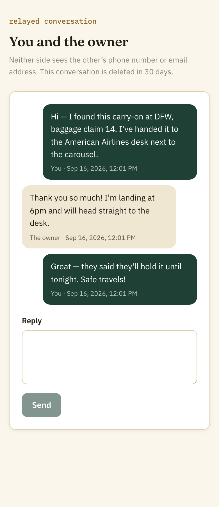
What is on it
You and the owner, a reminder that neither side sees the other's contact details and when the conversation will be deleted, the thread (the finder's own messages on the right), and a reply box — or “The owner has closed this conversation” once it is closed.
How it behaves
- No sign-in — the link is the access. Replies are limited to 20 an hour.
- Each reply notifies the owner and extends the conversation's life by 30 days.
- An expired or closed conversation shows “This conversation has ended”.
Privacy
The finder's view never includes the contact detail they left for the owner, nor anything about the owner beyond what the lost page already showed.
Unregistered tag
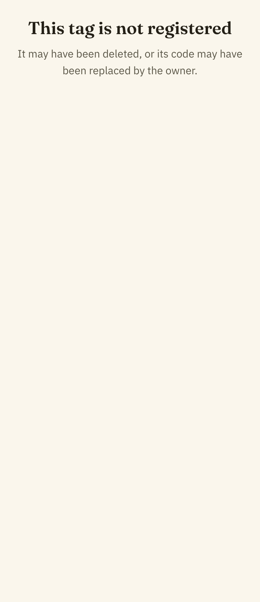
What is on it
“This tag is not registered. It may have been deleted, or its code may have been replaced by the owner.”
How it behaves
Shown for a code that never existed, a deleted tag, a rotated code, and a deleted account alike. These cases are deliberately indistinguishable, so scanning an old tag reveals nothing about what happened to its owner.
Emails
Every message is sent in two parts: an HTML version styled like the site, and a full plain-text version carrying the same links, for text-only clients and screen readers. The coloured bar at the top signals intent — forest for routine account mail, brick for anything that needs attention or concerns security, brass for purely informational notices.
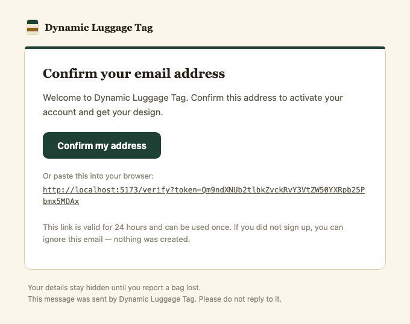
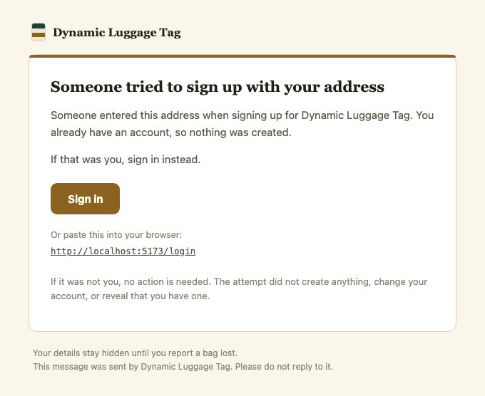
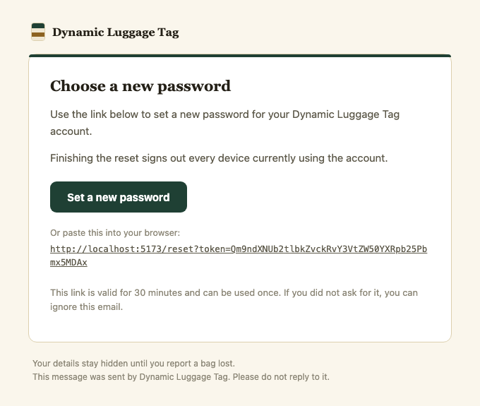
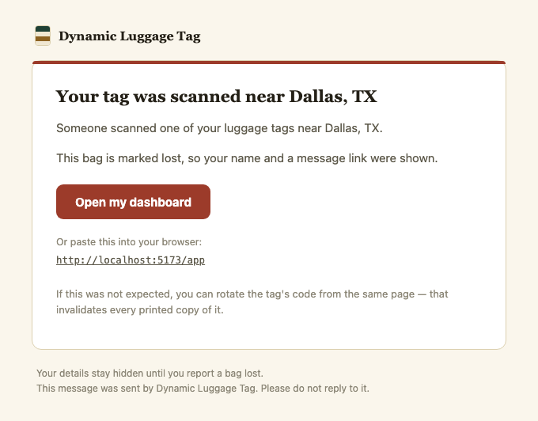
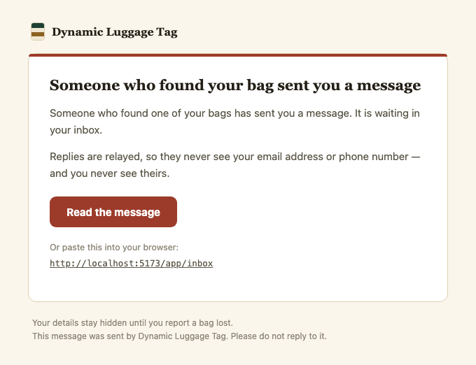
Not pictured, same template: Your password was changed, Two-factor authentication is off (both brick, with a “this was not me” link) and Your account has been deleted. All copy lives in api/app/services/notifications.py, so everything the service can put in an inbox is readable in one file.
Printed tag
From Download print PDF on Tag detail: a two-page PDF, front and back, at the print supplier's template size. Rendered here at three times scale.
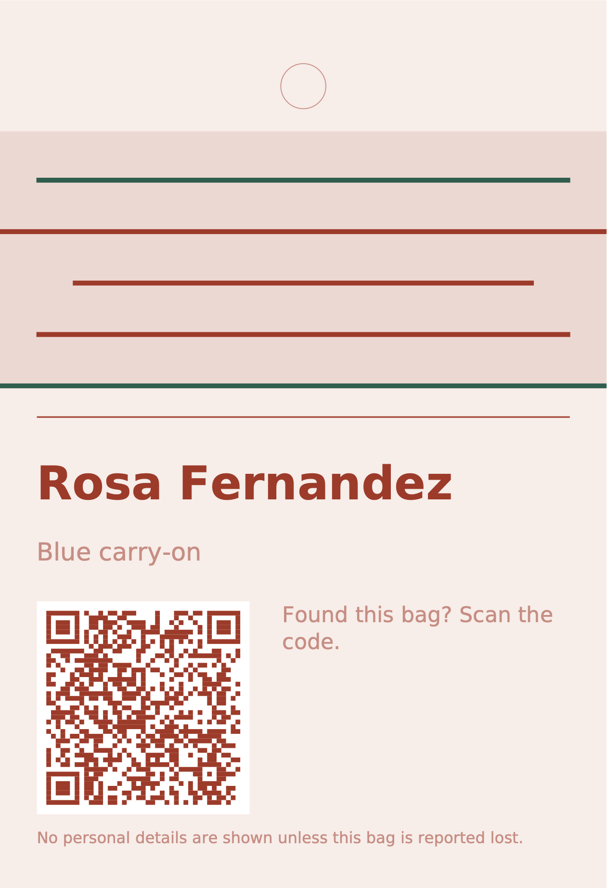
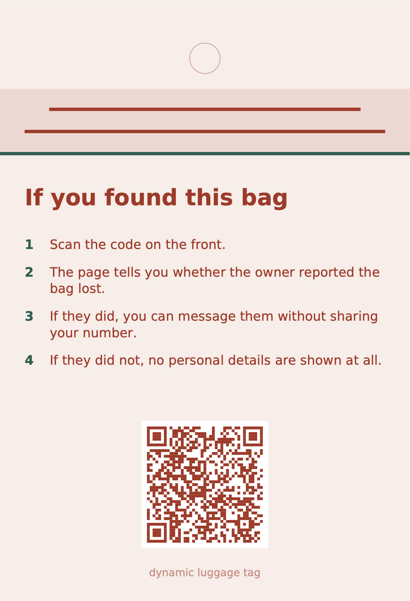
Front
The traveller's pattern running off both side edges, the owner's name and the tag's label, the QR code with its white quiet zone, “Found this bag? Scan the code.”, and a footnote that no personal details are shown unless the bag is reported lost. The circle near the top marks the strap hole.
Back
A strip of the same pattern so both sides read as one tag, If you found this bag with four numbered steps, and a second QR code. The instructions are sized to fit above the code; if a design's text would run long, the type steps down rather than overlapping the code's quiet zone.
Privacy
The name printed on the front is the owner's own choice and visible to anyone handling the bag — unlike everything behind the scan page. The QR encodes only the scan URL with its random token. The PDF carries no author, creator or producer metadata.
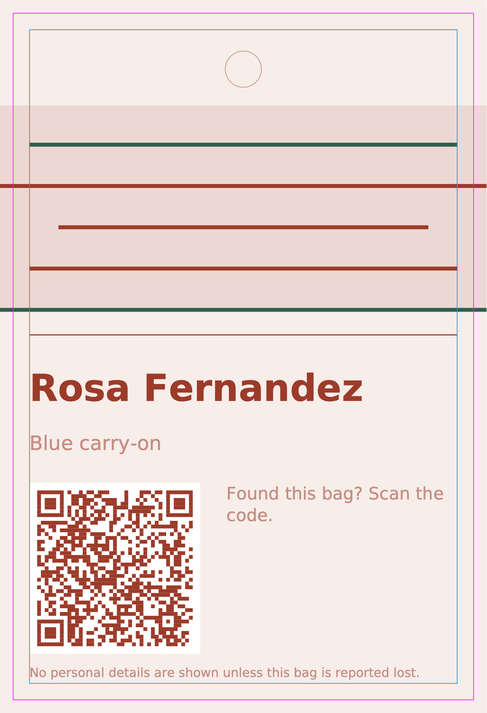
Geometry
| Height | Width | PDF box | |
|---|---|---|---|
| Bleed | 108.40 mm · 4.27″ | 74.10 mm · 2.92″ | MediaBox, BleedBox |
| Trim | 104.40 mm · 4.11″ | 70.10 mm · 2.76″ | TrimBox |
| Safety | 99.40 mm · 3.91″ | 65.10 mm · 2.56″ | ArtBox |
- 2.00 mm of bleed outside the trim and 2.50 mm of safety inside it, on every edge.
- Background and pattern run to the bleed edge so a drifting cut never shows white; text and QR stay inside the safety area so a drifting cut never clips them.
- Fonts are embedded — many print workflows reject files that aren't.
- Strap hole marked at 5.50 mm diameter, centred 8.50 mm below the trim edge.
- Add
?sides=1for the front only.
Never send a guided proof to print. The guide lines are drawn into the artwork itself.
Preview matches print
The tag drawn on the dashboard, the tag page and the scan page uses the same pattern geometry as this PDF. The shapes are calculated once in api/app/core/motif.py, and web/src/lib/motif.ts is a line-by-line port of that code. A test runs both on nearly 900 combinations of design and size and compares every coordinate, so the preview and print can't quietly drift apart. The one intended difference is the typeface: print embeds Bitstream Vera Sans, and the browser uses the nearest installed match.